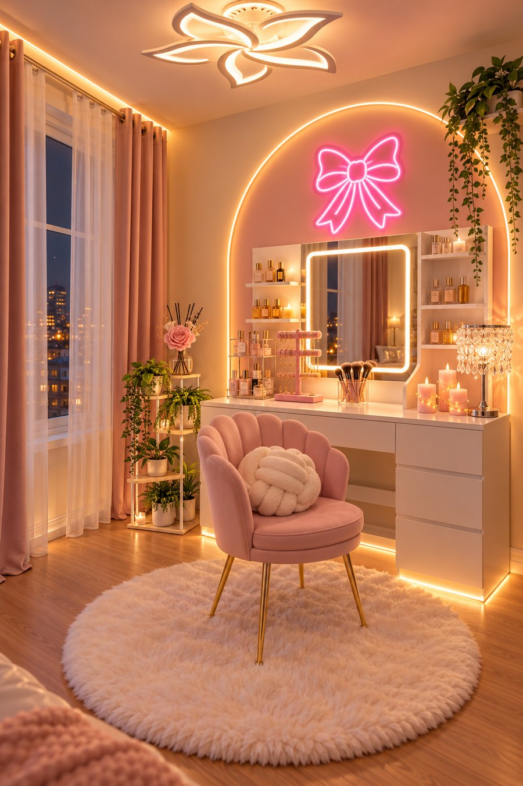
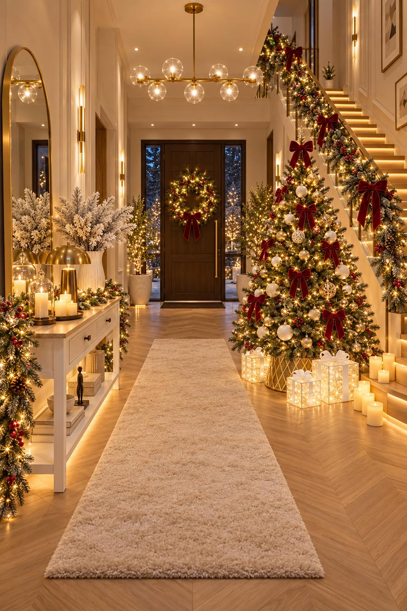
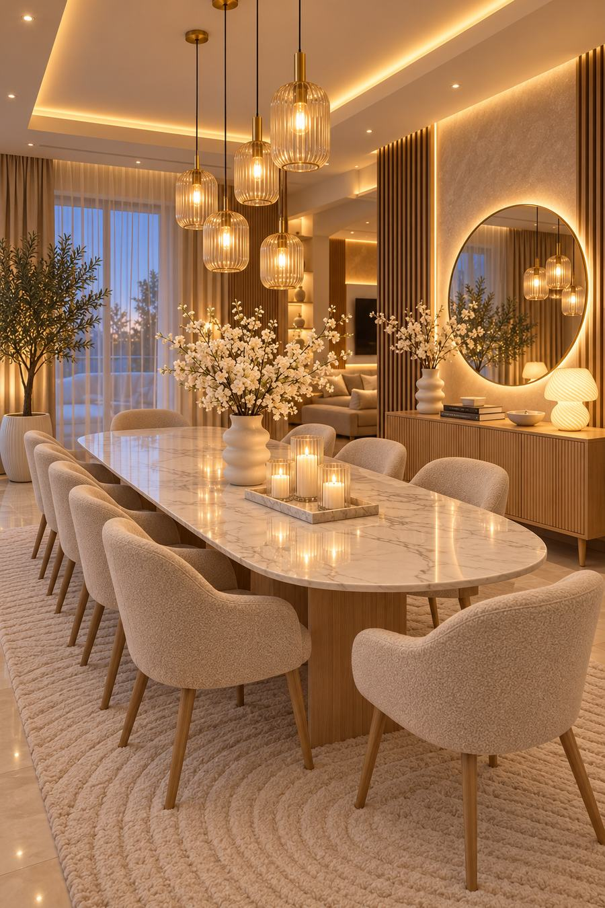
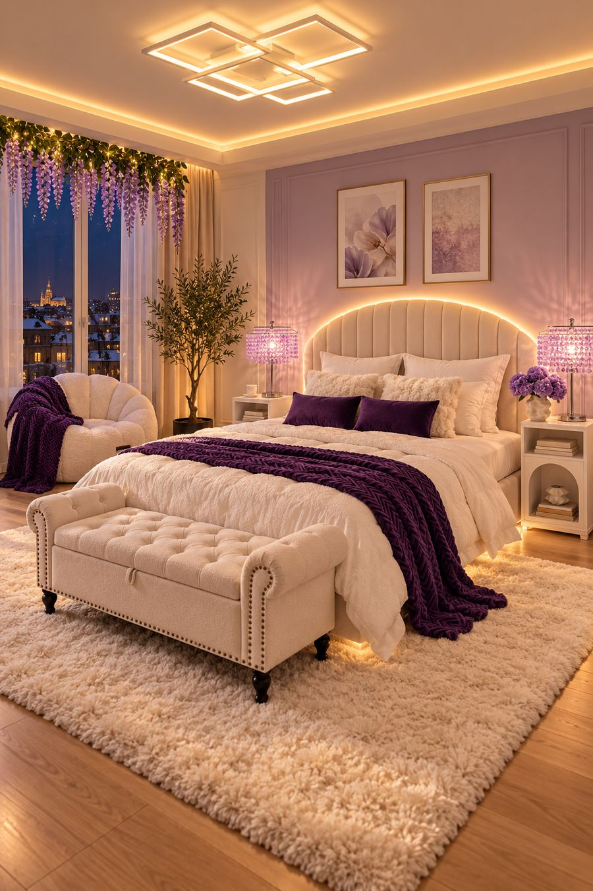
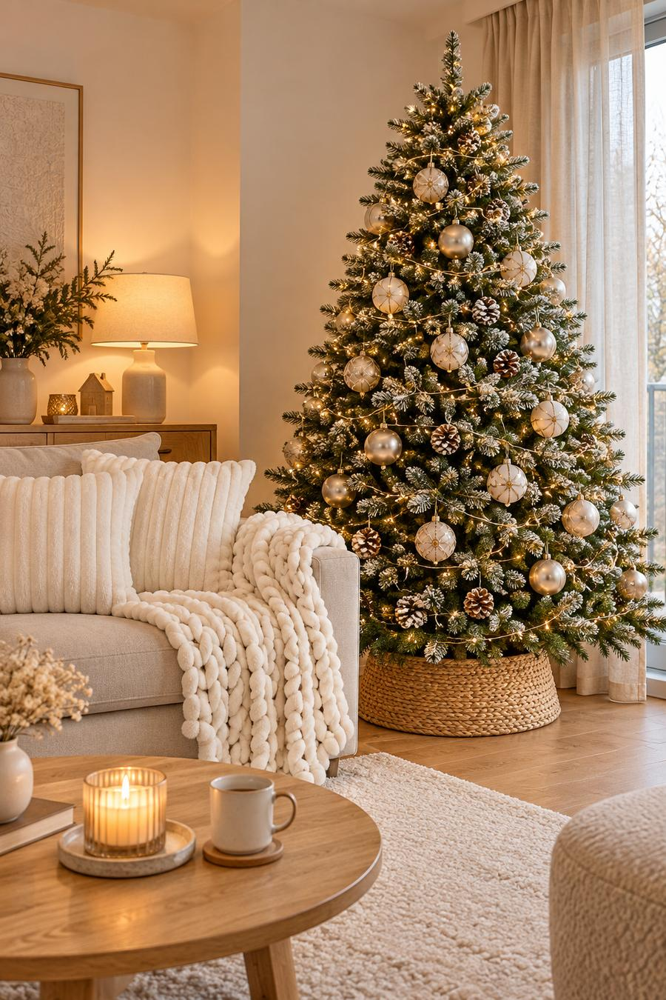
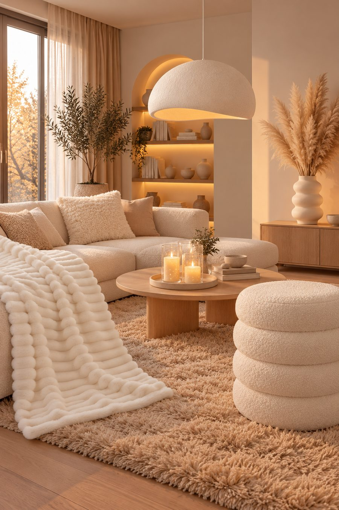

Des pièces cosy à recréer chez toi, article par article.
Chaque look est une pièce imaginée avec de vrais articles. Touche un numéro sur l'image : tu retrouves l'article, son prix et son lien.
- 1Choisis une pièce qui te plaît
- 2Touche un numéro sur l'image
- 3Retrouve l'article sur Amazon
Les looks de l'atelier
Des pièces cosy à recréer chez toi, article par article.
Idées du moment
20 looks

Salon lumineux violet et crème
Salon, 23 articles

Salle à manger de Noël blanche et dorée
Salle à manger, 13 articles

Balcon cosy rose et cerisier
Balcon et terrasse, 14 articles

Entrée lumineuse rose et dorée
Entrée, 11 articles

Chambre de Noël blanche et dorée
Chambre, 14 articles

Salon de Noël cosy rouge et blanc
Salon, 14 articles

Escalier de Noël bordeaux et doré
Entrée, 14 articles
![Salle à manger le soir : table ovale effet marbre blanc sur deux pieds à lattes en chêne clair, six chaises en velours taupe à pieds dorés sur un tapis taupe, trois suspensions en corde blanche à bord ondulé, bougeoirs dorés et bougies allumées sur un plateau en marbre, vase crème avec gypsophile, verres à vin, buffet taupe avec miroir rond rétroéclairé, pampa et lampe en verre ambré, olivier dans un grand pot beige, rideaux taupe et voilage devant une baie vitrée avec vue sur la ville la nuit, gorge LED au plafond](assets/img/looks/look016-salle-a-manger-taupe-doree.jpg)
Salle à manger taupe et dorée, ambiance du soir
Salle à manger, 15 articles
![Coin lecture le soir : grand fauteuil en forme de fleur en fausse fourrure crème avec un plaid rose à poils longs et un coussin vert sauge, pouf fleur bouclé, tapis rond crème, bibliothèque en arche en chêne clair éclairée par des LED, table d'appoint en acrylique vert transparent avec un vase vert, des tulipes roses et une carafe en forme de poisson, suspension globe en verre vert, lampadaire doré à abat-jour en verre vert en forme de fleur, étagères murales avec petits vases verts et plantes tombantes, lampes champignon en verre et grande plante oiseau de paradis près de la fenêtre au coucher du soleil](assets/img/looks/look010-coin-lecture-verre-vert.jpg)
Coin lecture verre vert et fauteuil fleur
Petits espaces, 14 articles
![Salle à manger de Noël le soir : table ovale noire à pieds cannelés dressée avec un chemin en velours bordeaux, une guirlande de sapin lumineuse avec pommes de pin, des bougies rouges dans des bougeoirs dorés, des photophores en verre rouge, des vases verts striés avec des baies rouges givrées, des assiettes dorées, des serviettes rouges, des couverts dorés et des verres rouges ; fauteuils en velours vert émeraude à pieds dorés avec nœuds rouges, lustre doré à globes de verre, sapin décoré de boules rouges et or avec cadeaux lumineux, rideau de LED à la fenêtre](assets/img/looks/look005-table-noel-rouge-vert-doree.jpg)
Table de Noël rouge, vert et doré
Salle à manger, 18 articles
![Salle de bain moderne le soir en noir, blanc et crème : douche italienne avec paroi verrière noire et colonne de douche noire à pommeau carré, niche éclairée, meuble vasque suspendu en chêne à lattes avec vasque blanche à poser et robinet haut noir, miroir irrégulier à LED, colonne de rangement noire aux portes en arche, suspension dorée à trois globes de cristal, porte-serviettes doré avec serviettes blanches et noires, plantes tombantes, deux affiches abstraites noir et blanc, panier à linge en corde blanche et tapis effet marbre gris et or](assets/img/looks/look012-salle-de-bain-noir-blanc.jpg)
Salle de bain noir et blanc, douche italienne
Salle de bain, 13 articles

Salon cosy vert sauge et doré
Salon, 16 articles

Coin coiffeuse rose et lumineux
Petits espaces, 14 articles

Entrée de Noël lumineuse
Entrée, 17 articles

Salle à manger élégante en marbre et bouclette
Salle à manger, 14 articles

Balcon cosy d'automne
Balcon et terrasse, 11 articles

Dressing ouvert lumineux et rose poudré
Dressing et rangement, 13 articles

Chambre cosy violette d'hiver
Chambre, 14 articles

Salon de Noël cosy beige et doré
Salon, 6 articles

Salon cosy beige
Salon, 6 articles